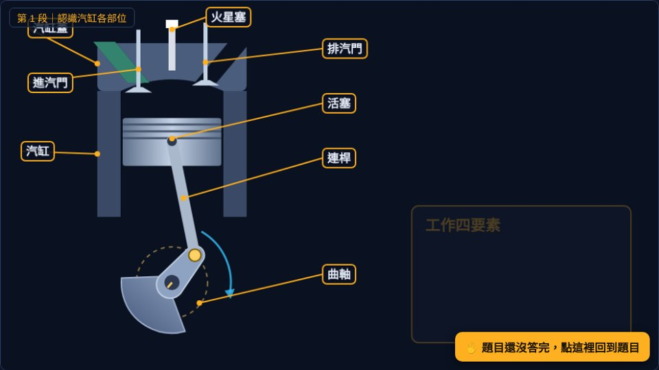

成果
七章、38 節課，全部上線

38支網頁動畫分段、逐格、拉桿跳段
38份上課簡報四學時間軸、內嵌動畫
46份站內測驗成績自動進總表
7份高優教案附學習單與解答版
除了 AI 訂閱，網站、成績、語音都用免費方案
AI 融入教學｜以《引擎原理》數位教材為例 林慶泓3 / 16
一節課怎麼上
50 分鐘，照四學走（第 4 節 四行程引擎）
分組、角色
車子發不動？
平板看動畫
每段小問題
每段小問題
老師整理觀念
輪流操作
說明、記錄
說明、記錄
全班挑戰
即時排名
即時排名
每人隨堂測驗


動畫要放進流程
光放給學生看不會變成學習。先預測、再觀察、再討論，最後每人自己作答。
AI 融入教學｜以《引擎原理》數位教材為例 林慶泓4 / 16
老師把關 ③ 怎麼修＋現場示範 ②
看完先停住、可以回頭看、答錯跳到說明
① 播完先停住
可「再看一次這段」，準備好再「回答問題」

② 答錯有指引
「🔎 跳到相關說明」直接跳到那句字幕

③ 看完回題目
播完那句自動停住，角落按鈕回到題目
📱 請試試看：剛才答錯的老師按「跳到相關說明」，答對的按「回去看這段」。只計首次答對的規則不變。
AI 融入教學｜以《引擎原理》數位教材為例 林慶泓11 / 16